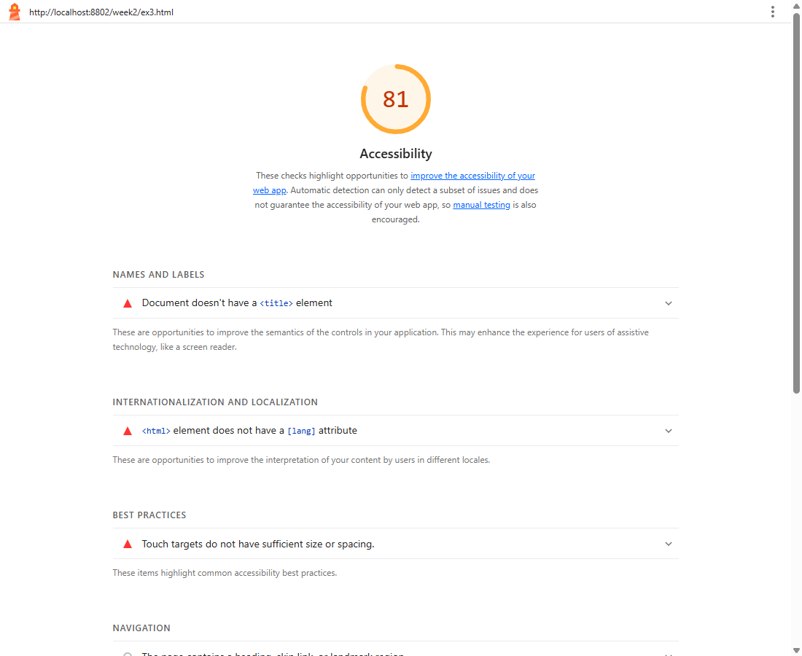
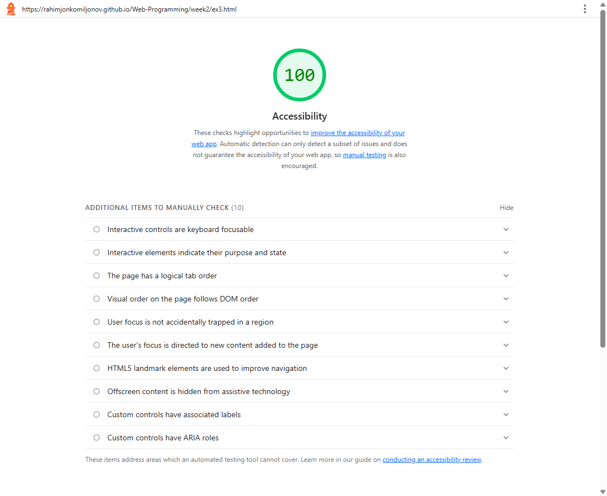
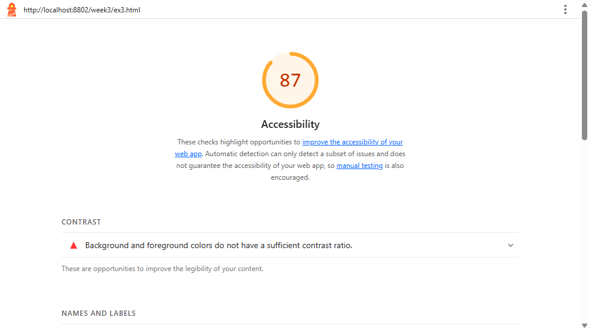
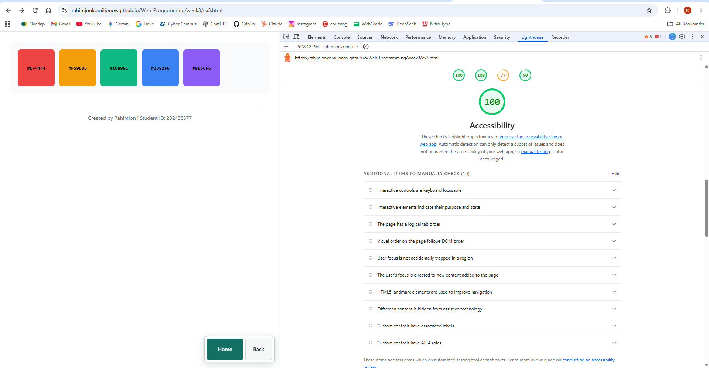
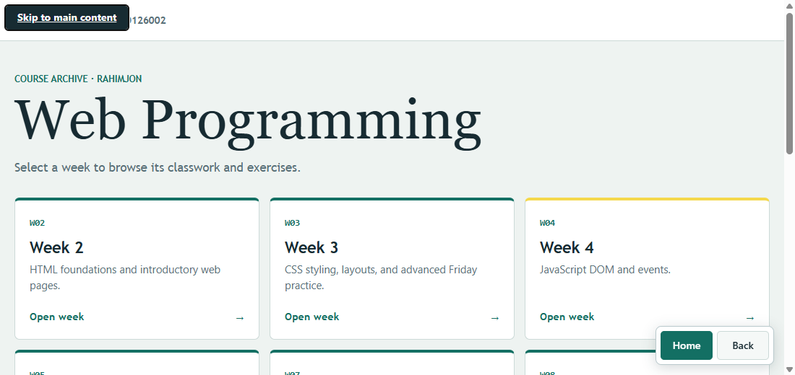

Web Accessibility Audit
Lighthouse accessibility audit (Chrome, mobile emulation) of every page on this site, using real reports, the fixes I made, and a skip link for the course project.
Scores
I ran Lighthouse (version 12.8.2, Accessibility category, mobile emulation, Chrome) on every page of this site. 12 of the 48 pages scored below 100 (average 97.6). After the fixes, all 49 pages on the live site score 100 (re-run on the GitHub Pages URLs).
week2/ex3.html
week2/ex3.html
week3/ex3.html
week3/ex3.html
Lighthouse screenshots
These are screenshots of the real Lighthouse reports; the audited URL is in the header of each one. The "before" runs use the code from before the fixes (commit 1cf03b3), which I served on localhost:8802 because that version was never published. The "after" runs use the live GitHub Pages URLs.




Fixes
These are the four failing audits Lighthouse reported, and what I changed for each.
- Added a
<title>(document-title) to 11 pages: week2/ex2, ex3, ex4, ex7 and week3/ex1 to ex7. Four of the Week 2 pages were bare fragments with no<html>or<head>, so they now have a full document. - Added
lang="en"(html-has-lang) to the same four Week 2 pages, so screen readers pick the right pronunciation. - Fixed colour contrast (
color-contrast) on two pages. Onweek3/ex3.htmlwhite labels on the colour swatches measured 2.14:1 to 3.76:1 in the report, so the labels are now black. Onweek3/ex8.htmlthe footer text was #587078 on #1e293b (2.78:1) and is now #cbd5e1. Both need at least 4.5:1. - Enlarged touch targets (
target-size). The menu links onweek2/ex3.htmlwere 17px tall (the minimum is 24px) and are now at least 24px. - Added a skip link (WCAG 2.4.1, Level A). It sits at the top of the home page and the group project page. For every other page,
site-nav.jsadds one automatically. It stays off-screen until the first Tab, then jumps to#main-content. I also wrapped the content of the fixed pages in a<main>landmark; Lighthouse did not flag that one, it is just good practice.

All pages that changed
Show 12 pages (before and after)
| Page | Before | After | Failing audits before |
|---|---|---|---|
| week2/ex3.html | 81 | 100 | document-title, html-has-lang, target-size |
| week2/ex2.html | 86 | 100 | document-title, html-has-lang |
| week2/ex4.html | 87 | 100 | document-title, html-has-lang |
| week3/ex3.html | 87 | 100 | color-contrast, document-title |
| week2/ex7.html | 88 | 100 | document-title, html-has-lang |
| week3/ex4.html | 93 | 100 | document-title |
| week3/ex6.html | 93 | 100 | document-title |
| week3/ex1.html | 94 | 100 | document-title |
| week3/ex2.html | 94 | 100 | document-title |
| week3/ex5.html | 94 | 100 | document-title |
| week3/ex7.html | 94 | 100 | document-title |
| week3/ex8.html | 94 | 100 | color-contrast |